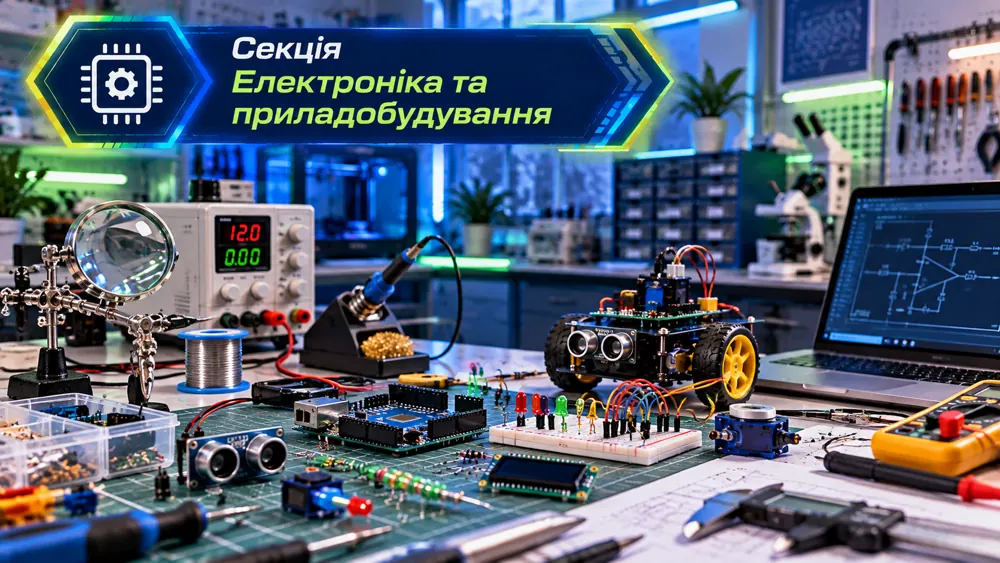
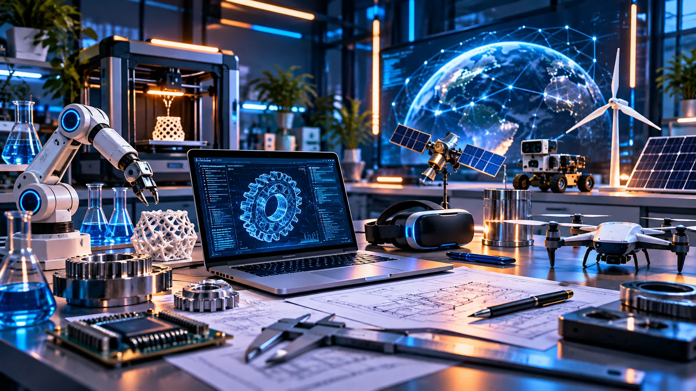
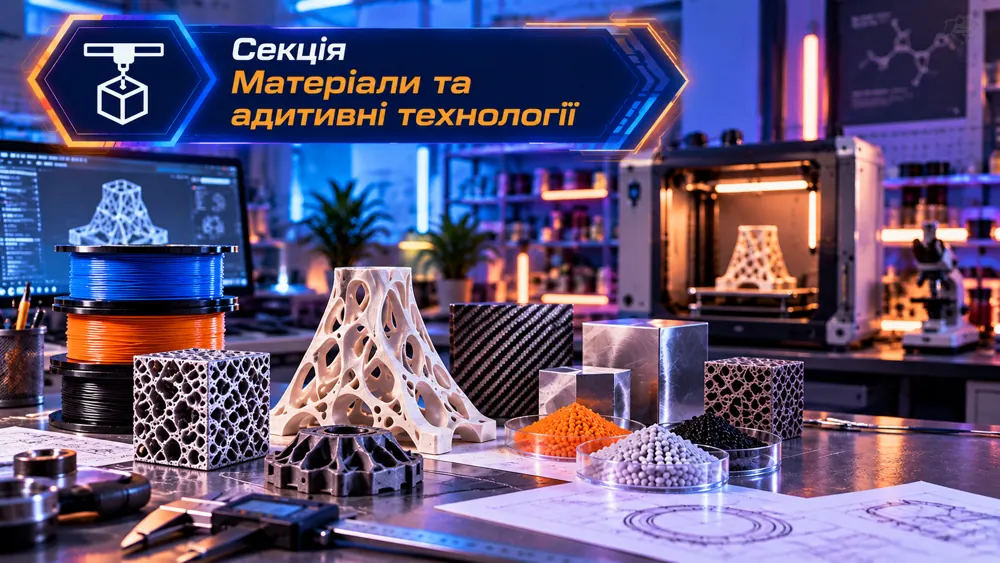
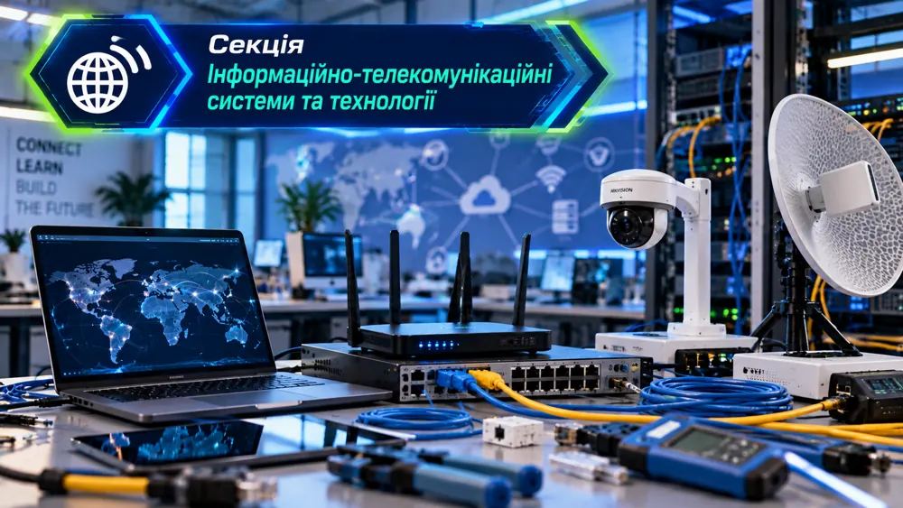
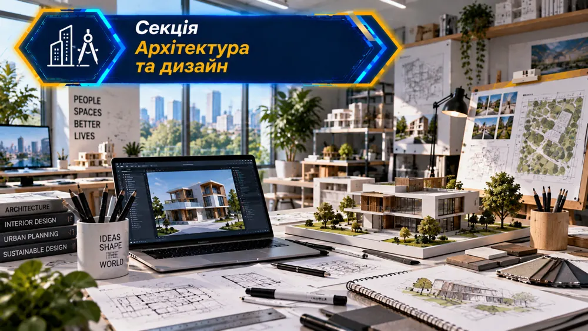
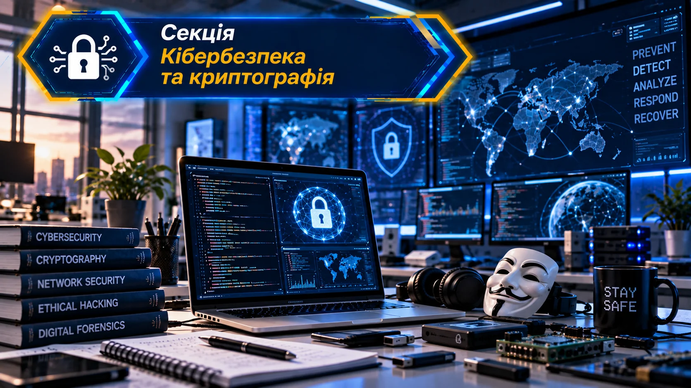
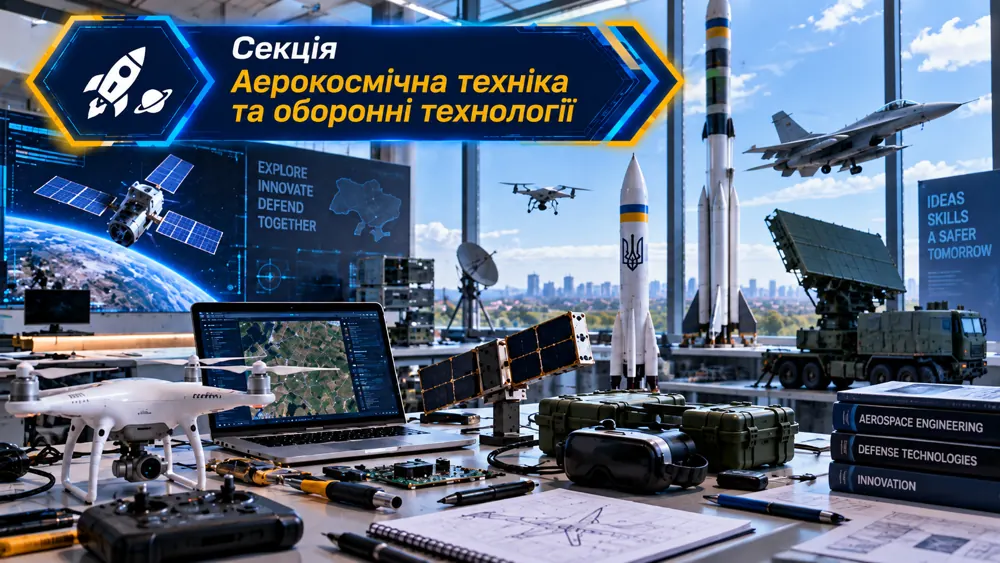
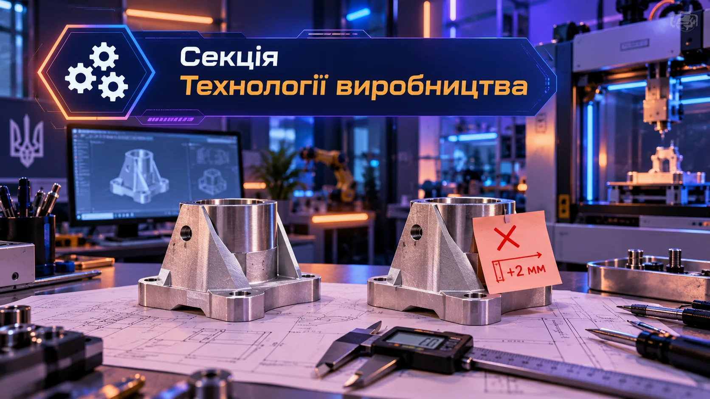
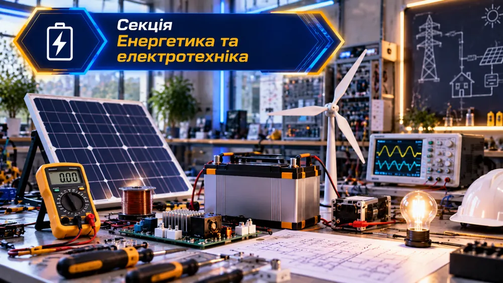
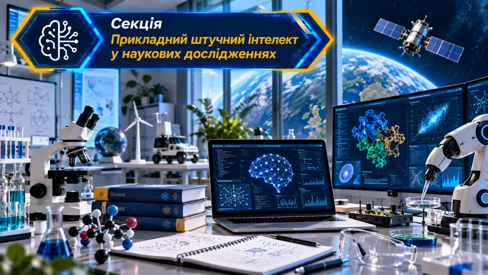

СЕКЦІЯ 03
Електроніка та приладобудування
Електронні схеми, датчики та вимірювальні системи.
Сторінка готуєтьсяВаш простір для досліджень, експериментів та інженерних відкриттів. Оберіть секцію, знайомтеся з технологіями та навчайтеся на інтерактивних курсах.

12 напрямів для тих, хто хоче не лише вивчати технології, а й створювати власні рішення.
Навчальні курси відкриваються поступово
Створення деталей, точність і технологічні процеси.
Відкрити курс
Нові матеріали, 3D-друк і дослідження властивостей.
Відкрити курс
Електронні схеми, датчики та вимірювальні системи.
Сторінка готується
Мережі, передавання даних та сучасний цифровий зв’язок.
Відкрити курс
Проєктування просторів, макети та дизайн-рішення.
Сторінка готується
Захист інформації, шифрування та цифрова безпека.
Відкрити курс
Інженерні рішення для авіації та космічних систем.
Відкрити курсМеханізми, конструювання та випробування моделей.
Відкрити курс
Роботи, керування та автоматизовані пристрої.
Сторінка готується
Електричні системи, енергія та її перетворення.
Сторінка готуєтьсяТехнології відповідального використання ресурсів.
Сторінка готується
Інтелектуальні моделі та аналіз дослідницьких даних.
Сторінка готується